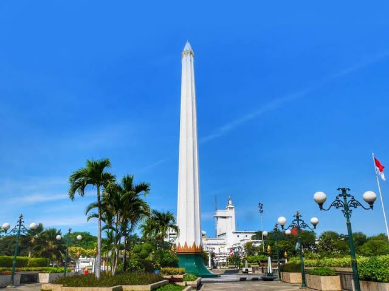

Architecture & Heritage
Civic Landmarks
Historical monuments, colonial structures, and modern civic installations across Surabaya.
National Monument
Tugu Pahlawan
The primary civic monument of Surabaya, standing 41.15 meters in height. Erected in memory of fighters who fell during the Battle of Surabaya on November 10, 1945.
The complex contains an underground museum housing historical dioramas, sound recordings of Bung Tomo's wartime speeches, and archival photography documenting the revolutionary era.

Selected Sites
Notable Locations
Campus Architecture
Infinits Lake (ITS)
An open water reservoir and reflective lake constructed within the Institut Teknologi Sepuluh Nopember campus. Designed with clean perimeter lines, native trees, and walkways that provide a peaceful public space and photography vantage point during sunset hours.
Colonial Heritage
House of Sampoerna
A preserved Dutch colonial compound dating to 1862. Originally an orphanage and later an industrial production facility, the site now serves as an architectural museum documenting historic manufacturing and regional colonial history.
Civil Infrastructure
Suramadu National Bridge
A cable-stayed bridge spanning 5.4 kilometers across the Madura Strait, connecting Surabaya to the island of Madura. It represents a major national civil engineering milestone opened in 2009.
Naval History
Monumen Kapal Selam (Monkasel)
The preserved hull of KRI Pasopati 410, a Whiskey-class submarine manufactured in the Soviet Union and commissioned into the Indonesian Navy in 1962. Positioned along the Kalimas River as an educational museum.
Religious Architecture
Masjid Nasional Al-Akbar
One of Southeast Asia's largest mosque complexes, characterized by its distinctive blue-green dome and a 99-meter minaret providing expansive vistas across southern Surabaya.
Urban Forestry
Taman Bungkul
An internationally acknowledged municipal park in the Darmo district, combining shaded pedestrian corridors, active recreation facilities, and integrated waste management programs.